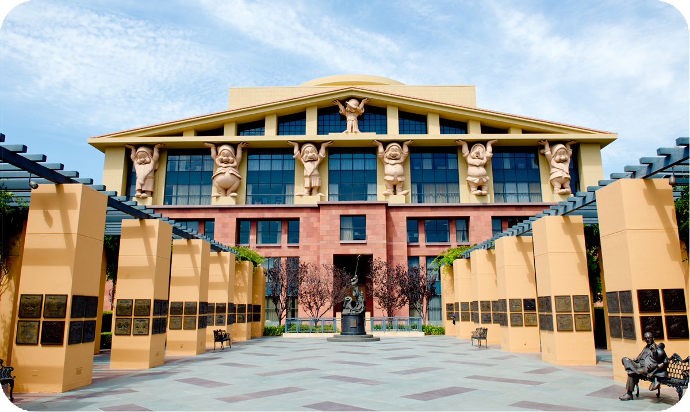

About
The Walt Disney Company, commonly referred to as simply Disney, is an American multinational mass media and entertainment conglomerate headquartered at the Walt Disney Studios in Burbank, California.
After becoming a major success by the early 1940s, Disney diversified into live-action films, television, and theme parks in the 1950s. However, following Walt Disney's death in 1966, the company's profits, especially in the animation division, began to decline. In 1984, Disney's shareholders voted Michael Eisner as CEO, who led a reversal of the company's decline through a combination of international theme park expansion and the highly successful Disney Renaissance period of animation in the 1990s. In 2005, under new CEO Bob Iger, the company continued to expand into a major entertainment conglomerate with the acquisitions of Pixar, Marvel Entertainment, Lucasfilm, and 21st Century Fox. In 2020, Bob Chapek became the head of Disney after Iger's retirement. However, Chapek was ousted in 2022 and Iger was reinstated as CEO.
The company is known for its film studio division, the Walt Disney Studios, which includes Walt Disney Pictures, Walt Disney Animation Studios, Pixar, Marvel Studios, Lucasfilm, 20th Century Studios, 20th Century Animation, and Searchlight Pictures. Disney's other main business units include divisions in television, broadcasting, streaming media, theme park resorts, consumer products, publishing, and international operations. Through these divisions, Disney owns and operates the ABC television network; cable television networks such as Disney Channel, ESPN, Freeform, FX, and National Geographic; publishing, merchandising, music, and theater divisions; direct-to-consumer streaming services such as Disney+, E SPN+, Hulu, and Hotstar; and Disney Experiences, which includes several theme parks, resort hotels, and cruise lines around the world.

Disney is one of the biggest and best-known companies in the world and was ranked number 48 on the 2023 Fortune 500 list of biggest companies in the United States by revenue.[6] In 2023, the company's seat in Forbes Global 2000 was 87. Since its founding, the company has won 135 Academy Awards, 26 of which were awarded to Walt. The company has been said to have produced some of the greatest films of all time, as well as revolutionizing the theme park industry. The company, which has been public since 1940, trades on the New York Stock Exchange (NYSE) with ticker symbol DIS and has been a component of the Dow Jones Industrial Average since 1991. In August 2020, about two-thirds of the stock was owned by large financial institutions. The company celebrated their 100th anniversary on October 16, 2023.